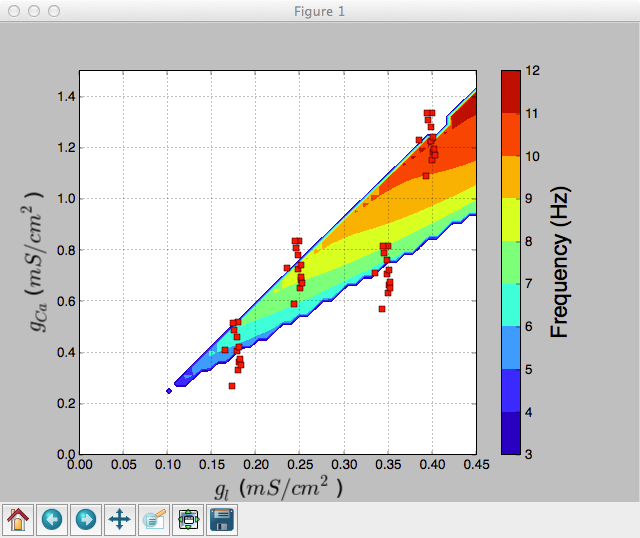
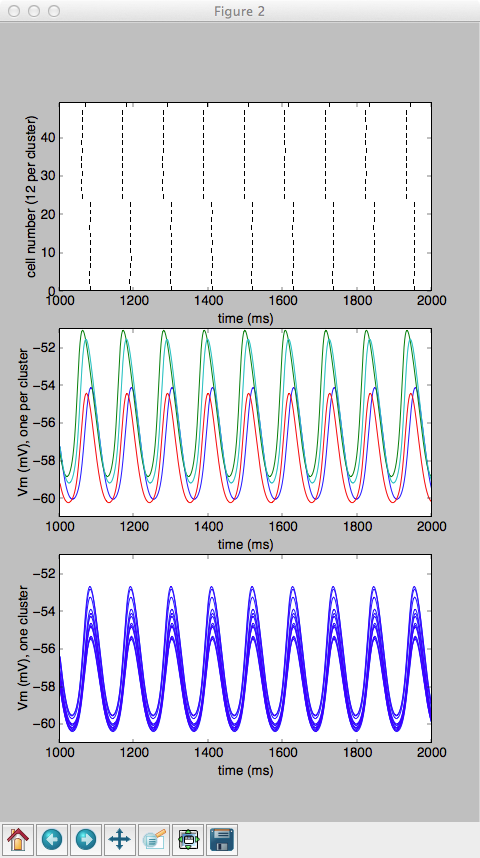

This is the readme for the models associated with the paper: Torben-Nielsen B, Segev I, Yarom Y (2012) The generation of phase differences and frequency changes in a network model of inferior olive subthreshold oscillations. PLoS Comput Biol 8:e1002580 This is the NEURON python code that was used by the paper authors. It also requires pylab which can be installed as per instructions here: http://www.scipy.org/install.html Usage instructions: ------------------- Under linux start with command nrngui -python cluster_hyp.py After a short time the following graphs similar to Figs 1A, 2B, 2C appear:  